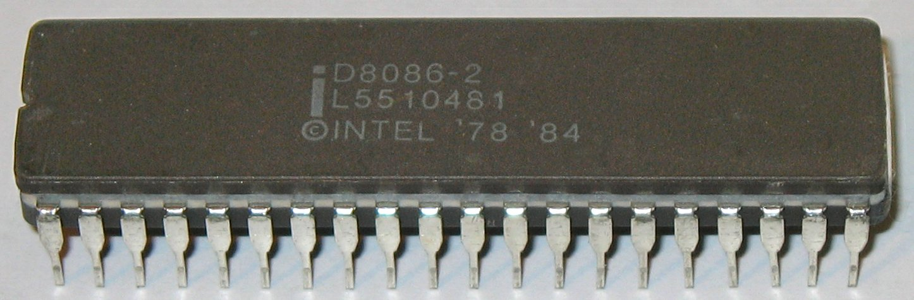

Prosessor
CPU er engelsk forkortelse for Central Processing Unit også kalt Prosessor.
Prosessoren er hjernen i datamaskinen.
Hastigheten på en CPU er mellom 2-4 GHz for nye maskiner.
Prosessoren har typisk to logiske bestanddeler: styreenheten og utførelsesenheten.
CPU har overordnet ansvar for alt som skal utføres, og delegerer eventuelt oppgaver til andre enheter.
Midt på 70-tallet kom det enkle hobbydatamaskiner og videospillkonsoller med 8-bits mikroprosessore.
Dagens prosessorer har enten to eller fire kjerner, kjerner gjør at prosessoren kan ta imot flere instruksjoner om gangen.
I 1975 kom 16.bits prosessorene, 32-bits prosessorene kom i 1980 og de første 64-bits kom ca 10år etter det.
Ytelsen til mikroprosessoren har siden tidlig på 1970-tallet blitt doblet omtrent hver 18. måned.
Sammenligning av en 8-bit og en 64-bit cpu
| Forskjellen | 8-bit | 64-bit |
|---|---|---|
| Temperatur | trenfer ikke kjøling | effektiv kjøling nødvendig |
| Antall transitorer | 3510 | 1 750 000 000 |
| Transistirer/mm | 10/mm 2 | 17.5millioner/mm 2 |
| Hastighet | 1000hz | 2 000 000 000hz |
| Pris | 250 kr | 3500 kr |
Intel
Intel er en amerikansk produsent av mikroprosessorer.
Intel ble grunnlagt 18 juli 1968 av fysiker Robert Noyce, og kjemikerne Gordon Moore og Andrew Grov
Selskapet var verdens største innen halvlederteknologi frem til det ble forbigått av Samsung i 2017.
Intel står bak x86-arkitekturen som benyttes i de fleste PC-er.
Grunnlagt 1968 - laget intel 4004 CPU, 4 bits cpu.
Dagens CPUer 64bit. 4 bit gir 2^4 som største tall = 16
For 5-6år siden var standars størrelsen 32 bit (som hadde tall på 4294967296)
Dagens CPU kan jobbe med tall på 2^64 = 18446744073709551616

AMD
AMD (Advanced Micro Devices) laget sin første CPU 8080 AM9080 (en klone av intel 8080)

ARM
Acorn (Advanced) RISC (Reduced Instruction Set Computer) Machine.
RISC CPUer har få og enkle instrukser ( i motsetning til Intel).
Hver instruks skal ta minst mulig tid.
ARM er en 32-bits reduced instruction set computer (RISC).
ARMs-professoerer har lavt strømforbruk og derfor er de spesielt egnet for bruk i bærbare enheter.
Nesten alle moderne mobiltelefoner innneholder ARM-prosessor noe som gjør den til den mest brukte 32-bit mikroprosessorfamilien i verden.